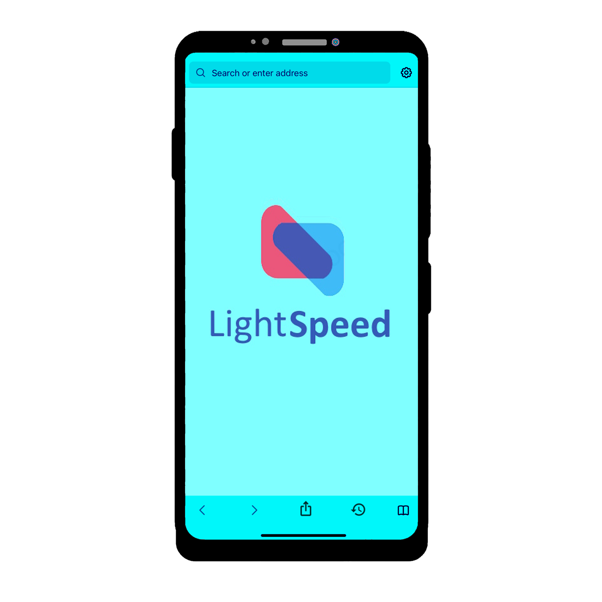

CineSeeker
AI Movie Recommender
-
Developed a AI machine learning algorithm that accurately predicts user
preferences based on input queries, offering a list of top movie
recommendations.
-
Data Utilization:
- The project utilizes two TMDB dataset files: tmdb_5000_credits and
tmdb_5000_movies, incorporating information of movie attributes such
as include cast, keywords, director, and genres, facilitating a
comprehensive understanding of movie characteristics.
-
Algorithmic Approach:
-
Data preprocessing involves merging datasets based on ID columns and
extracting relevant features to construct a comprehensive data
frame.
-
Count Vectorization is implemented to quantify word frequency
distribution in movie descriptions. Cosine similarity of the feature
matrix is calculated, providing a measure of similarity between
movies.
-
The system's database is limited to 5000
movies, restricting its ability to recommend movies
outside this dataset.
- The project utilizes two TMDB dataset files: tmdb_5000_credits and tmdb_5000_movies, incorporating information of movie attributes such as include cast, keywords, director, and genres, facilitating a comprehensive understanding of movie characteristics.
- Data preprocessing involves merging datasets based on ID columns and extracting relevant features to construct a comprehensive data frame.
- Count Vectorization is implemented to quantify word frequency distribution in movie descriptions. Cosine similarity of the feature matrix is calculated, providing a measure of similarity between movies.
eMarket
Web Application
-
Language Used:
- Frontend: JavaScript, jQuery, Razor, and CSS
- Backend: ASP. Net Core, C#, and MS SQL
- Led a team of 4 to design and develop a Web application using Visual Studio. e-Market is a web application that is an eCommerce platform where users can post classified ads to sell their products or search other ads to buy.
- During the 3 months of development, we implemented version control using GIT for seamless collaboration within the development team.
- Successfully developed a robust e-Market web application hosted on Microsoft Azure.
LightSpeed
Browser for Android
- Language Used: Java, SQLite
- Created light and fast web browser application for Android using Android Studio.
- The browser has quality features such as private mode, web browsing history, and navigation functionality. Application uses SQLite database to store history and other data
